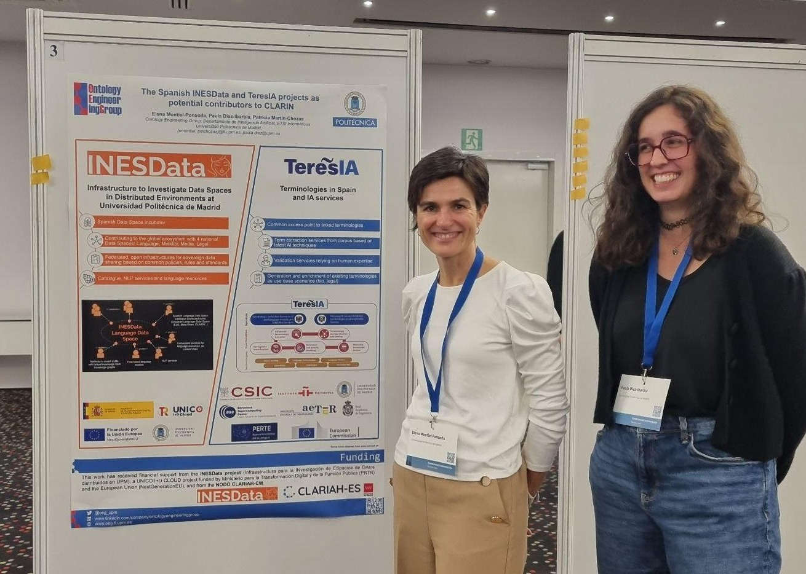
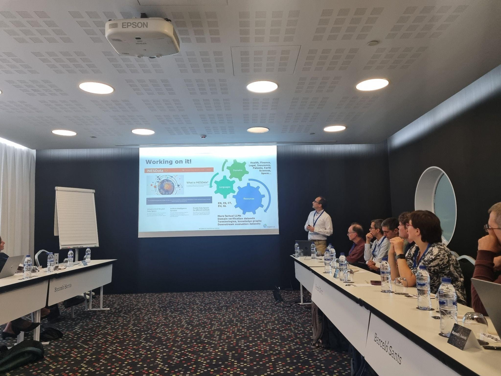

Anunciamos la publicación del Corpus de Cláusulas Contractuales en Español Legal (3CEL), un recurso de referencia en el ámbito del Procesamiento del Lenguaje Natural (NLP) aplicado al derecho contractual en español. Este corpus ha sido desarrollado por el Instituto de Ingeniería del Conocimiento (IIC) en el contexto del proyecto INESData, un proyecto coordinado por la Universidad Politécnica de Madrid (UPM).
3CEL es un corpus de datos de extracción de información contractual que contiene 373 licitaciones anotadas manualmente con 19 categorías definidas, sumando un total de 4,782 etiquetas. Este recurso es esencial para la comprensión y revisión de contratos y documentos legales, permitiendo una clasificación estructurada de su contenido.
El desarrollo de 3CEL ha implicado un riguroso proceso incluyó la recolección de datos, definición de etiquetas, transcripción y limpieza de textos, anonimización y anotación de documentos obtenidos de la Plataforma de Contratación del Sector Público de España. Estos contratos corresponden a licitaciones ejecutadas en la Comunidad de Madrid entre diciembre de 2021 y diciembre de 2023. Además, ha servido para entrenar y evaluar modelos avanzados de PLN, destacando el modelo de lenguaje MEL (Modelo del español jurídico) por su precisión y eficiencia en la categorización de spans en textos legales.
La publicación de este corpus supone un avance significativo en la disponibilidad de recursos de PLN en español y abre nuevas oportunidades para investigaciones y aplicaciones en el ámbito legal y tecnológico.
Madrid, 3-4 de diciembre de 2024. En la Primera Cumbre de Espacios de Datos Gaia-X España, evento destacado para el futuro de la tecnología y la economía del dato en España, INESData participa en la sesión "Tecnologías para espacios de datos".
Elena Montiel Ponsoda (OEG-UPM) y Juan Miguel Auñón (GMV), explican cómo crear un espacio de datos mediante la plataforma INESData, las tecnologías desarrolladas y un ejemplo práctico, el espacio de datos de movilidad desarrollado en el proyecto.
INESData se presenta como una herramienta práctica y sencilla para facilitar el despliegue de un espacio de datos.
Madrid, 12 de diciembre de 2024. INESData participó en el UNICO I+D Project Meet-up Madrid 2024, un evento que reunió a los principales proyectos financiados bajo el programa UNICO I+D Cloud. La jornada, organizada en la ETSI de Montes, Forestal y del Medio Natural (UPM) por el proyecto ELADAIS, fue una oportunidad para el intercambio de conocimientos y la generación de sinergias en el ámbito de la innovación digital.
En la sesión "Action presentations, key use cases and demonstrators", los representantes de INESData, Óscar Corcho y Cristina Sandoval, presentaron "INESData - Infrastructure to Investigate Data Spaces in Distributed Environments at UPM". Durante la presentación, se destacaron los logros del proyecto en la creación de una incubadora nacional de espacios de datos basada en infraestructuras federadas cloud-edge, así como su impacto en sectores estratégicos, como la movilidad o la lingüística, en Europa.
Actualmente, el programa UNICO I+D cuenta con 16 proyectos, entre ellos ELADAIS, AMOR y Data&CodeContinuum, que, al igual que INESData, comparten la visión de potenciar la innovación en la nube y son liderados íntegramente desde la Universidad Politécnica de Madrid.
El evento reunió a representantes de proyectos financiados por UNICO I+D Cloud, y se contó con los representantes de la Comisión Europea, como Stefan Bogensberger y Rolf Riemenschneider, así como expertos del Instituto Tecnológico de Informática (ITI), entre ellos Daniel Sáez Domingo.
Barcelona, 15 de octubre de 2024. INESData se presenta en dos sesiones en la conferencia CLARIN 2024:
"The Spanish INESData and TeresIA projects as potential contributors to CLARIN", presentada por Elena Montiel, Paula Diez y Patricia Martín Chozas.

"Evaluating LLMs for factuality in multilingual, low-resourced scenarios", a cargo de José Manuel Gómez-Pérez.

Este evento reúne a expertos internacionales en procesamiento del lenguaje y espacios de datos lingüísticos.
Esta guía práctica, que se actualiza continuamente a medida que avanza el proyecto, se centra en esta edición en la gobernanza de los espacios de datos, un aspecto crucial para su desarrollo y consolidación.
La nueva versión del Handbook incorpora tres elementos fundamentales:
Guía Práctica sobre Cuestiones de Cumplimiento con la normativa del Espacio de Datos.
Definición de roles en la gobernanza del Espacio de Datos, estableciendo las responsabilidades y funciones de los distintos actores involucrados.
Modelos Contractuales Tipo, diseñados para facilitar acuerdos claros y estructurados entre las partes bajo el marco de gobernanza.
Además de servir como referencia para la creación y gestión de espacios de datos dentro del proyecto INESData, esta versión recoge aprendizajes y referencias de iniciativas internacionales que fortalecen el marco de gobernanza.
Puedes descargarte el documento en el siguiente enlace.
El entorno INESData Local Environment permite a los usuarios familiarizarse con el conector INESData. Mediante la ejecución del entorno local, los usuarios podrán conocer cómo funciona el conector de INESData así como comprobar cómo interactúan varios conectores entre sí.
El entorno está paquetizado y permite utilizar las últimas versiones de INESData Connector (v0.2.0) y del INESData Interface Connector mediante imágenes docker, mediante un simple: docker compose up. Entre las funcionalidades principales se encuentra:
Se ha disponibilizado un colección Postman para realizar ejemplos de interacciones entre los conectores del entorno local de una manera sencilla
Se ha incluido un repositorio para los assets tipo S3 mediante MinIO como parte del despliegue automatizado del conector
Primera versión del Vocabulary Management que permite definir los vocabularios de cada Espacio de Datos en tiempo de diseño y crear automáticamente la UI para la anotación
La transferencia de assets es totalmente funcional desde la intrerfaz
Nos enorgullece anunciar nuestra participación en la Data Week 2024, dentro del marco del Data Spaces Symposium 2024, que se celebró en Darmstadt, Alemania. Durante la sesión "Generative AI: BDVA’s Member’s Experience", tuvimos la oportunidad de compartir nuestras experiencias y avances en la inteligencia artificial generativa junto a otros líderes del sector.
Este evento ha supuesto ser un crisol de innovación y colaboración, donde exploraremos cómo la IA generativa está transformando los espacios de datos y potenciando nuevas oportunidades para la industria.
¡No podemos esperar a mostrarles cómo INESData está a la vanguardia de esta revolución tecnológica! Para más información, podéis visitar: Data Week 2024 - Generative AI Session
INESData organiza dos workshops en el marco de EELISA Connect 2024
Madrid, 4-8 de marzo de 2024. Como parte de EELISA Connect 2024, INESData ha organizado y dirigido dos talleres en los que se abordan los avances en el desarrollo de espacios de datos y tecnologías de inteligencia artificial.
Durante el evento, INESData coordinó los siguientes talleres:
"Data Spaces for Researchers: Fostering Collaborative Research and Innovation" (4-5 marzo). Coordinada por Esteban González y Carlos Ruiz, esta sesión abordó el papel de los espacios de datos en la investigación colaborativa. Andrés García y Juan Miguel Auñón presentaron estrategias para fomentar la interoperabilidad y el acceso abierto a datos científicos. Más información: EELISA Connect Workshop Data Spaces
"Teaching and Learning Language Technologies (text and speech) in light of Generative AI" (7-8 marzo). Elena Montiel y Patricia Martín Chozas dirigieron esta sesión centrada en la enseñanza y aprendizaje de tecnologías lingüísticas en la era de la inteligencia artificial generativa. Se discutieron aplicaciones innovadoras en educación, procesamiento del lenguaje natural y modelos de lenguaje multilingües. Más información: EELISA Connect Workshop LLT
INESData refuerza su compromiso con la investigación abierta, la inteligencia artificial y la interoperabilidad de datos en Europa.
El portal de la Universidad Politécnica de Madrid ha publicado una nota de prensa haciéndose eco del desarrollo, implicaciones y potencial de la incubadora INESData.
La nota de prensa resalta que "Desarrollar una Incubadora Española de Espacios de Datos para fomentar la adopción de este tipo de tecnología y acelerar el desarrollo de un ecosistema de Espacios de Datos en nuestro país es el objetivo de INESData (Infraestructura para la INvestigación de ESpacios de Datos) proyecto liderado desde la universidad Politécnica de Madrid (UPM) que ha recibido 5 millones de euros de financiación por parte Del programa español UNICO I+D Cloud."
Nuestros compañeros Gabriela Argüelles Terrón, Patricia Martín Chozasy Víctor Rodríguez Doncel han publicado el artículo "Event Extraction and Semantic Representation from Spanish Workers’ Statute Using Large Language Models" como parte del 36th International Conference on Legal Knowledge and Information Systems (JURIX 2023).
Este trabajo utiliza LLMs para procesar una pieza importante de la legislación española: el Estatuto de los Trabajadores. El método propuesto extrae los eventos relevantes en sus artículos utilizando un modelo GPT-3.5 y representa las entidades involucradas en los eventos y las relaciones entre ellas como tripletas RDF. Los experimentos llevados a cabo para seleccionar una estrategia incluyen zero- and few-shot learning. Finalmente, este trabajo propone una estrategia para elevar las relaciones jurídicas extraídas a un gráfico de conocimiento jurídico.
Podéis encontrar el ar´ticulo como parte del IOS Press Ebooks aquí
El portal de la Escuela Técnica Superior de Ingenieros Informáticos ha publicado una nota de prensa haciéndose eco del desarrollo, implicaciones y potencial de la incubadora INESData.
La nota de prensa resalta que "El proyecto INESData (Infraestructura para la INvestigación de ESpacios de DAtos distribuidos en UPM) es una iniciativa liderada por la Universidad Politécnica de Madrid (UPM) a través de sus grupos de investigación Ontology Engineering Group (OEG) y el Centro de Proceso de Información y Telecomunicaciones (IPTC). Su misión principal es crear una incubadora de espacios de datos en España, con el objetivo de fomentar la investigación, el desarrollo y la innovación en áreas relacionadas con la tecnología de Espacios de Datos y promover la colaboración público-privada."
Este pasado 26 de Octubre se presentó el proyecto, retos y objetivos en el >European Big Data Value Forum (EBDVF) durante la sesión "Data Spaces Roadmap and Future Programme". Esta es una oportunidad increíble para compartir nuestra visión y avances en la creación de espacios de datos interoperables y seguros en España y su impacto en Europa.
Puedes encontrar más información sobre el evento en el siguiente enlace.
Publicado el entregable E4. Versión preliminar del handbook.
Los avances en tecnología e inteligencia artificial (IA) han puesto en evidencia la importancia de los datos. En la actualidad, es muy frecuente usar tecnicas de aprendizaje profundo, Machine Learning en ingles, para la creación de sistemas y servicios. Dichas tecnicas necesitan usar una cierta cantidad de datos; es máas, dependiendo de la cantidad y la calidad de los datos usados, el sistema obtenido sera de mayor o menor calidad.
Esta guía practica tiene como objetivo presentar los espacios de datos creados en la incubadora INESData y explicar el proceso de creacion para que los interesados en desarrollar espacios de datos puedan tener una referencia practica. Dado que el proyecto esta aún en sus primeras fases, está versión de la guía se centrara, sobre todo, en explicar que son los espacios de datos así como analizar las diferentes iniciativas internacionales que sirven como referencia.
Puedes encontrar el enlace y descargarte el documento en el siguiente enlace.